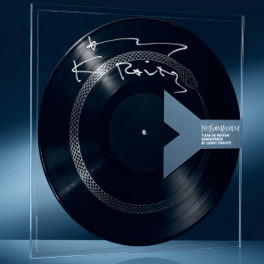

Y to kolejny etap w drodze do realizacji.
Dla mężczyzn, którzy są świadomi swojej pozycji, a ich charakter
sprawia,
że podejmują stawiane przed nimi wyzwania.

Nuta głowy: Imbir, Bergamotka
Nuta serca: Jałowiec, Muszkat, Lawenda
Nuta bazy: Jodła, Drewno, Bób tonka, Bursztyn